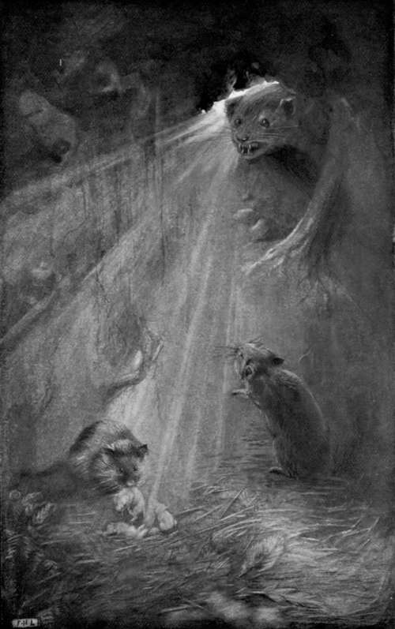

The Field Vole. I. Hidden Pathways In The Grass
Description
This section is from the book "Creatures Of The Night: A Book Of Wild Life In Western Britain", by Alfred W. Rees. Also available from Amazon: Creatures Of The Night: A Book Of Wild Life In Western Britain.
The Field Vole. I. Hidden Pathways In The Grass
The sun had set, the evening was calm, and a mist hung over the countryside when a field-vole appeared at the mouth of his burrow in a mossy pasture. The little grey creature was one of the most timorous of the feeble folk dwelling in the pleasant wilderness of the Valley of Olwen. His life, like that of Brighteye, the water-vole, was beset with enemies ; but Nature had given to him, as to the water-vole, acute senses of sight, and smell, and hearing, and a great power of quick and intelligent action. He had lived four years, survived a hundred dangers, and reared twenty healthy families; and his wits were so finely sharpened that he was recognised by a flourishing colony, which had gradually increased around his moss-roofed home, as the wisest and most wideawake field-vole that ever nibbled a turnip or harvested a seed.
For a moment the vole sat in the mouth of the burrow, with nothing of himself visible but a blunt little snout twitching as he sniffed the air, and two beady eyes moving restlessly as he peered into the sky. Suddenly he leaped out and squatted beside the nearest stone. A robin, disturbed in his roosting place by another of his kind, flew from the hedge in furious pursuit of the intruder, and passed within a few inches of the burrow. The vole, alarmed by the rush of wings, instantly vanished; but soon, convinced that no cause for fear existed, he again left his burrow and for several minutes sat motionless by the stone.
He was not, however, idle — a field-vole is never idle save when he sleeps—but he was puzzled by the different sounds and scents and sights around him; they had become entangled, and while he watched and listened his mind was trying to pick out a thread of meaning here and there. What was the cause of that angry chatter, loud, prolonged, insistent, in the fir plantation at the bottom of the field ? Some unwelcome creature, bent on mischief—perhaps a weasel or a cat—was wandering through the undergrowth, and the blackbirds, joined by the finches, the wrens, and the tits, were endeavouring to drive it from the neighbourhood. Gradually the noisy birds followed the intruder to the far end of the slope; then, returning to their roosting places, they squabbled for the choice of sheltered perches among the ivied boughs. Silence fell on upland and valley; and the creatures of the night crept forth from bank and hedgerow, and the thickets of the wood, to play and feed under the friendly protection of the fast-gathering gloom. But the field-vole would not venture from his lair beside the stone.
A convenient tunnel, arched with grass-bents, led thither from the burrow, the post of observation being shaped through frequent use into an oval " form." The vole, though anxious to begin his search for food, was not satisfied that the way was clear to the margin of the fir plantation, for the air was infused with many odours, some so strong and new that he could easily have followed their lines, but others so faint and old that their direction and identity were alike uncertain. From the signs that were fresh the vole learned the story of field-life for the day. Horses, men, and hounds had hurried by in the early morning, and with their scent was mingled that of a fleeing fox. Later, the farmer and his dog had passed along the hedge, a carrion crow had fed on a scrap of refuse not a yard from the stone, and a covey of partridges had " dusted " in the soft soil before leaving the pasture by a gap beside a clump of furze. Blackbirds, thrushes, yellow - hammers, and larks had wandered by in the grass, a wood-pigeon and a squirrel had loitered among the acorns under the oak, and a hedgehog had led her young through the briars. Rabbits, too, had left their trails in the clover, and a red bank-vole had strayed near the boundaries of the field-vole's colony. Their signs were familiar to the vole from experience; he detected them and singled them out from the old trails with a sense even truer than that of the hounds as they galloped past in the morning's chase.
There was one distinct scent, however, that baffled him. At first he believed it to be that of a weasel, but it lacked the pungent strength inseparable from the scent of a full-grown " vear".
Gathering courage as the darkness deepened, the field-vole rustled from his lair, ran quickly down the slope, and crept through a wattled opening into the wood. He found some fallen hawthorn berries among the hyacinth leaves that carpeted the ground, and of these he made a hasty meal, sitting on his haunches, and holding his food in his fore-paws as he gnawed the firm, succulent flesh about the kernel of the seed. Then, with a swift patter of tiny feet on the leaf-mould, he ran down to a rill trickling over a gravelly bed towards the brook, stooped at the edge of a dark pool in the shadow of a stone, and lapped the cool, clear water. Thence he made for the edge of the wood, to visit a colony of his tribe which in spring had migrated from the burrows in the uplands. Half-way on his journey, he again suddenly crossed the line of the unknown scent, now mingled with the almost overpowering smell of a full-grown weasel. The mystery was explained: the strange trail in the upland meadow had evidently been that of a young "vear" passing by the hedge to join its parent in the wood.
For a moment the vole stood petrified with terror; then he sank to the earth, and lay as still as the dead leaves beneath him. But there was no time to be lost; the "vears" were returning on their trail. In an agony of fear the mouse turned back towards his home. He ran slowly, for his limbs almost refused their office of bearing him from danger. Reaching the mouth of his burrow with great difficulty, he dropped headlong down a shallow shaft leading to one of the numerous galleries. Then, lo! his mood immediately changed; his reasoning powers became strong and clear; his parental instincts whispered that his family, like himself, was in peril. Squeaking all the while, he raced down one tunnel, then down another, turned a sharp corner beneath an archway formed by the roots of a tree that had long ago been felled; and there, in a dry nest of hay and straw, he found his mate with her helpless little family of six blind, semi-transparent sucklings only three days old. He heard on every side the quick scamper of feet as, alarmed by his cries, the voles inhabiting the side passages of the burrow scurried hither and thither in wild efforts to remove their young to some imagined place of safety.
"SHE WAS HOLDING ONE OF HER OFFSPRING BY THE NECK, IN PREPARATION FOR FLIGHT." (See p. 139).
[To face p. 138].
His mate, like her neighbours, had already taken alarm. At the moment of his arrival she was holding one of her offspring by the neck, in preparation for flight. The next instant an ominous hiss reverberated along the hollow passages; the mother vole, with her suckling, vanished in the darkness of the winding gallery; and the weasels descended into the labyrinth of tunnels hollowed out beneath the moss.
Continue to: